tutorial: hello world!
In this tutorial, you'll learn how to create a basic Mylo widget that just displays the text "Hello world!" in a box - a classic first-time programming project.
creating the necessary files
Mylo widgets are essentially just tiny websites - they're designed and programmed using HTML, CSS, and JavaScript, just like any other website. For this widget, because all we'll be doing is displaying some text, we'll only need to create two files - an "index.html" and a "widgetPackage.xml". Before you get started, I recommend creating a new folder whenever you start a new widget project to keep all its files contained and organized.
index.html
The index.html file contains the HTML code that will be displayed when your widget starts. Just like any other website, this can contain references to any other external resources in your widget, like CSS and JS files.
For this project, create a new index.html file and enter the following text:
<html> <head> <meta http-equiv="Content-Type" content="text/html; charset=utf-8" /> <title>hello</title> </head> <body style="background-color: #0000FF;"> <p style="text-align: center; color: #FFFFFF;">Hello world!</p> </body> </html>
This will create a widget with a blue background and the text "Hello world!" in a white font.
Tip: If you don't specify a background for the body, the background will just be transparent.
widgetPackage.xml
Next, the widgetPackage.xml file. This is an XML file that contains information about your widget, such as its title, description, version number, width/height, and author info. Create a new widgetPackage.xml file and enter the following text:
<?xml version="1.0" encoding="utf-8" ?> <widgetPackage xmlns="http://xmlns.sony.net/mylo/widget" version="1.0"> <info> <packageName>Hello World!</packageName> <author>Frost Sheridan</author> <abstract>My first mylo widget!</abstract> <version>1.000</version> <locale>US</locale> <engine>1.000</engine> <updateURL></updateURL> <siteURL>http://cyberdragon.digital/</siteURL> <minWidth>20</minWidth> <maxWidth>50</maxWidth> <minHeight>10</minHeight> <maxHeight>32</maxHeight> <defWidth>32</defWidth> <defHeight>25</defHeight> <createDate>2023-05-08</createDate> </info> </widgetPackage>
creating the widget package
Now that both files have been created for this widget, we can package them up into a widget file that the Mylo can run. Mylo widget files are called widget packages and have a ".mylow" extension. They're nothing special though - they're literally just renamed zip files!
The process for creating a widget package is very simple. Here's how you do it on Windows:
Select all of the files you want to include in your widget (in this case, just index.html and widgetPackage.xml). Right-click one of your selected files and go to Send To -> Compressed (zipped) folder.
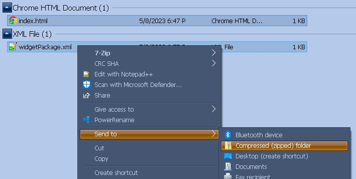Rename the newly-created zip file to widgetname.mylow (replace "widgetname" with whatever you want the filename to be - I named mine hello.mylow).
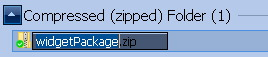 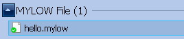If Windows warns you about changing the file extension, click Yes to allow it.
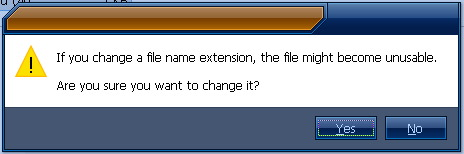Cool! You've just created your very first widget. Now, let's load it onto your Mylo.
installing the widget
Power on your Mylo and connect it to your computer via USB. It should show MSC (Mass Storage Class) Mode on the screen and appear on your computer as a USB flash drive.
Copy your hello.mylow package to the Mylo's storage. I recommend creating a Widgets folder on your Mylo to put all your widget packages in.
Once the file has finished copying, unplug your Mylo. It'll say Please Wait... for a minute or so as it indexes the changes you've made to its storage.
Press the orange mylo button on the right side of the Mylo's screen to open the mylo screen, the desktop where you can place your widgets. Your mylo screen may already have some widgets on it or be totally blank. Mine just has the Google search bar on it right now.
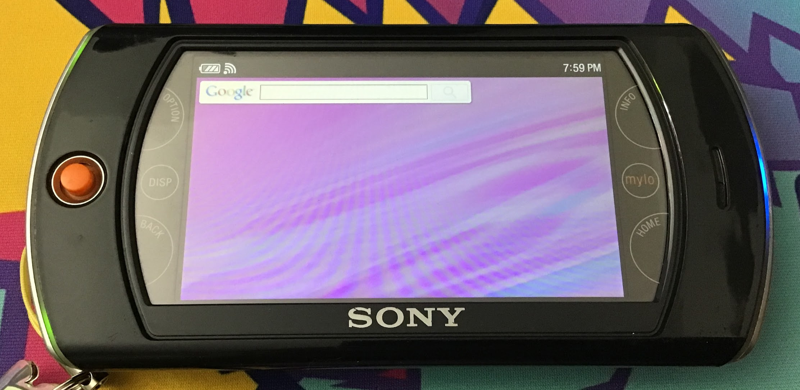Press the option button and select Widget Installer.
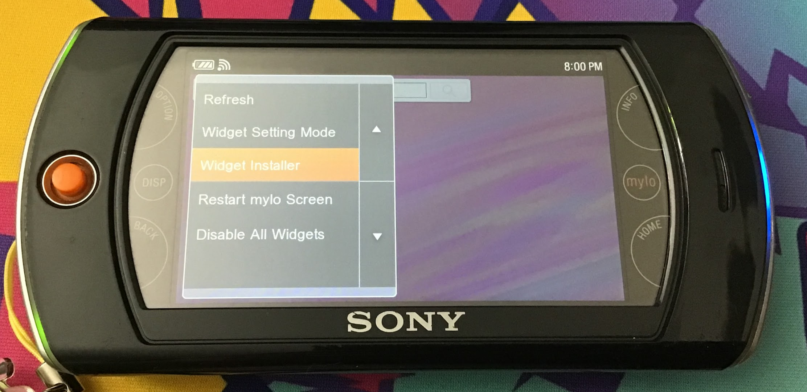Select Install in the widget installer.
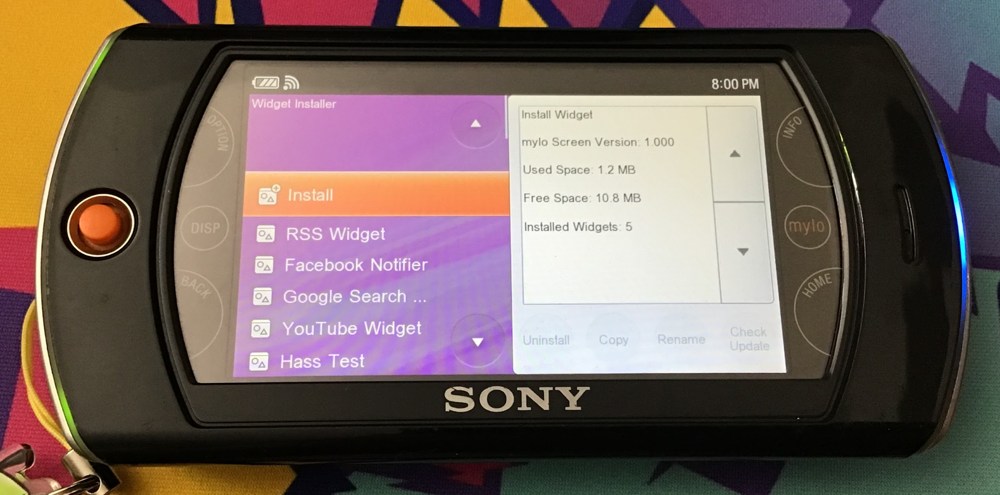Navigate to your hello.mylow file. Select it, then hit Install.
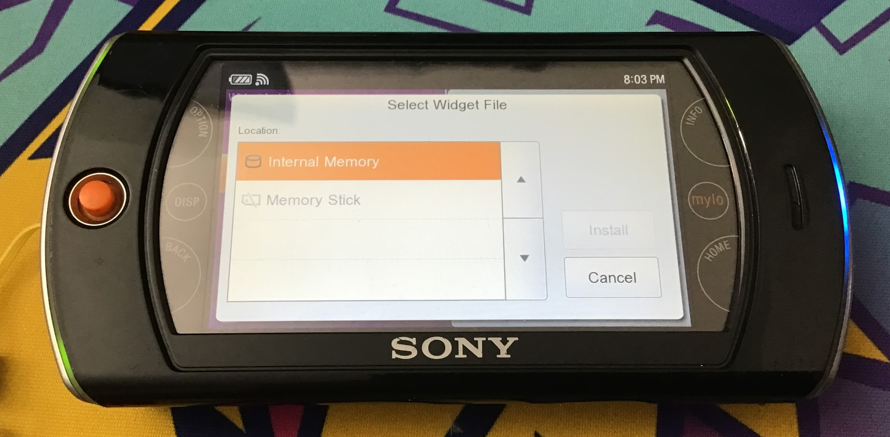 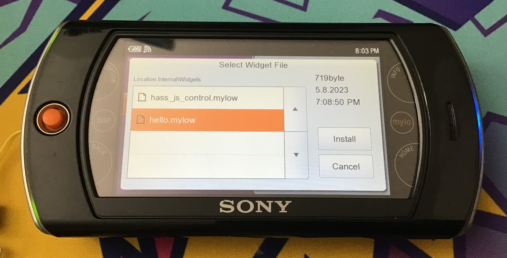Sony will warn you that you're about to Install A Software. Hit OK to continue.
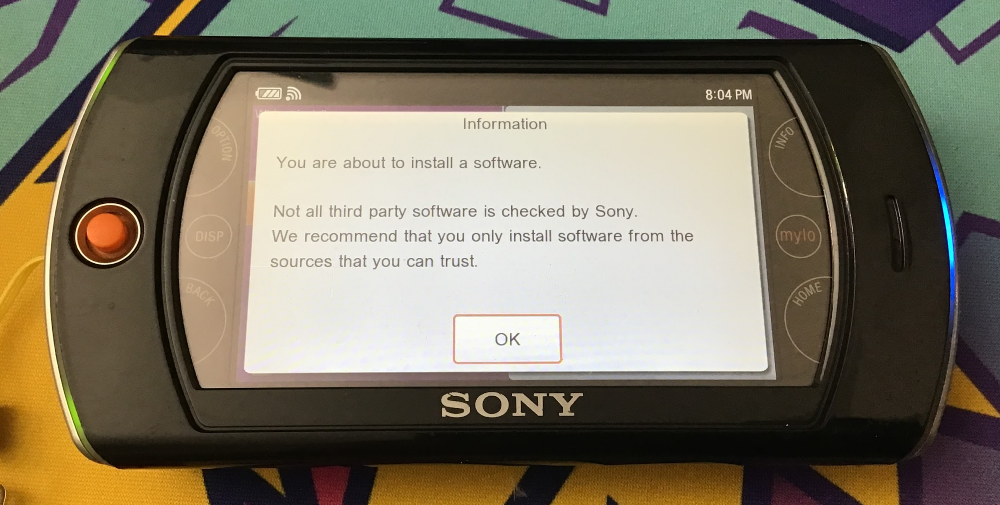If all went well, the information entered in your widgetPackage.xml should now show up! Hit OK to continue.
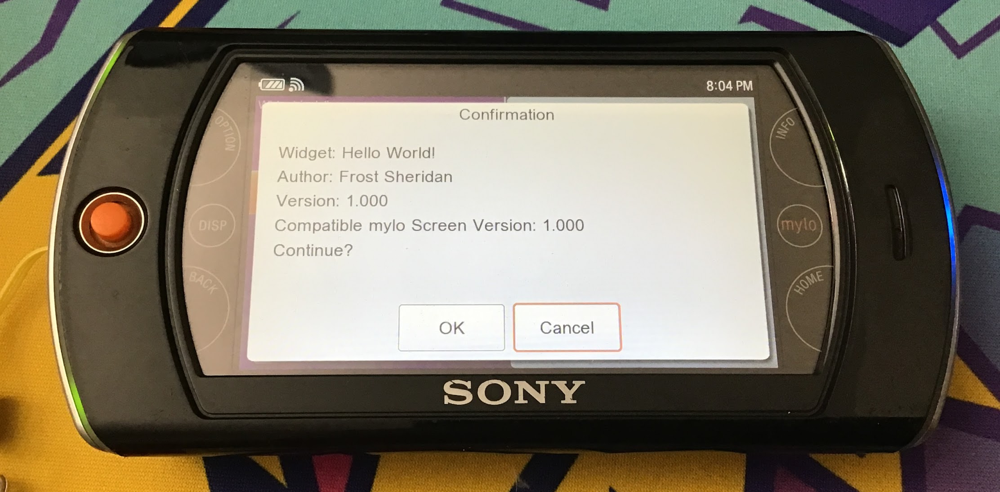Your widget should now appear in your list of installed widgets.
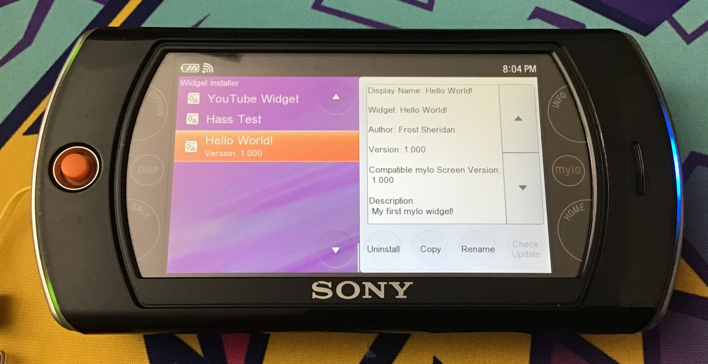Press the back button to return to the mylo screen, then press option and select Widget Setting Mode.
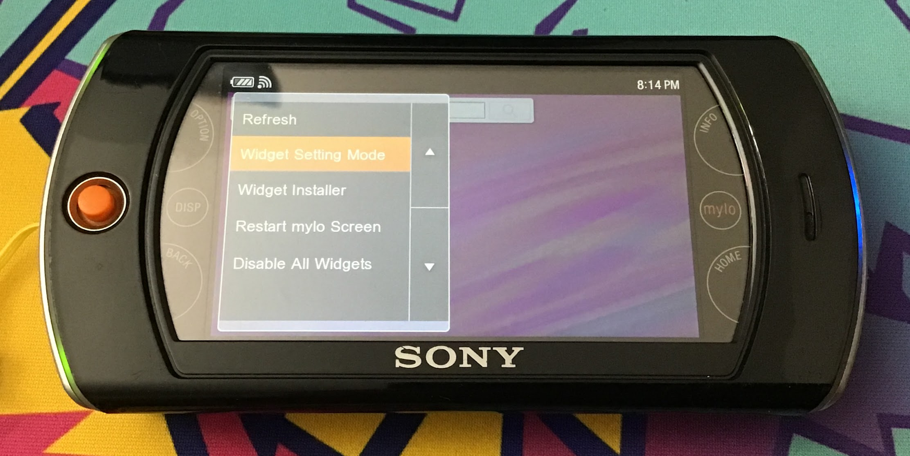If you have any widgets active, orange borders will appear around them. Press option again and select Add Widget.
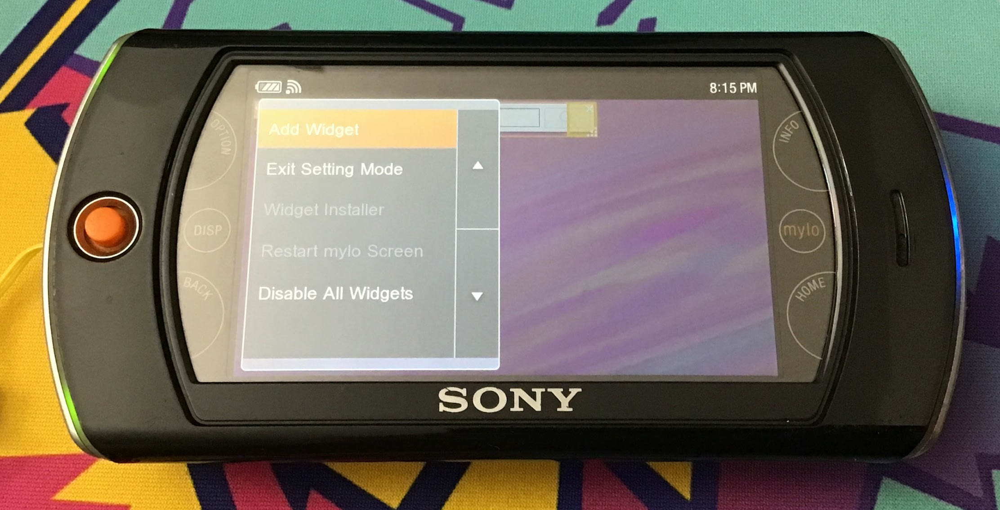Select your Hello World widget from the list.
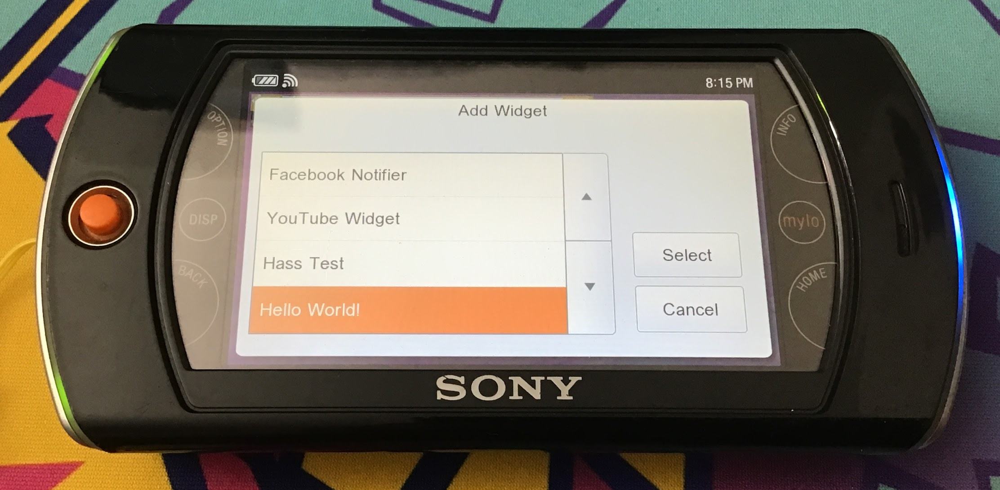Your widget should appear in the center of the screen. While in Widget Setting Mode, you can drag the top-left square to move the widget, drag the bottom-right square to resize it, and press the top-right square to delete it. Deleting a widget from here doesn't actually uninstall it though - it just disables it.
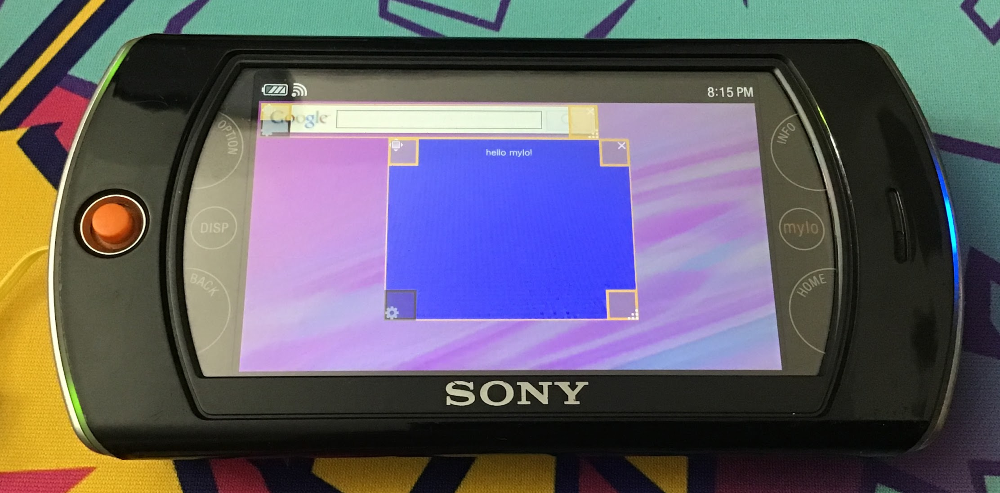Press option and select Exit Setting Mode to save your changes. Your widget is now fully installed!
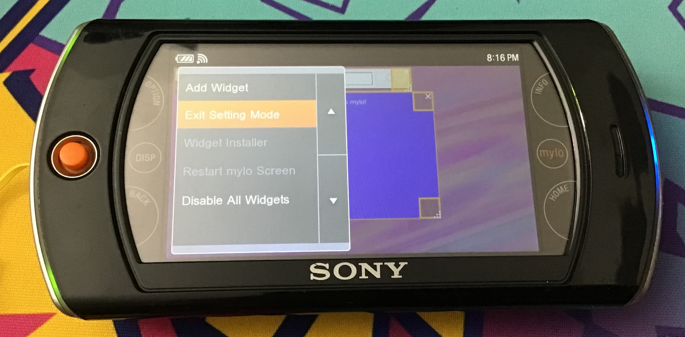If you want to actually uninstall your widget, go back to the Widget Installer, scroll to your widget, and press Uninstall.
what next?
So you've successfully made your first widget! Next, you can try adjusting the details of your widget in the widgetPackage.xml file - read the Describe Your Widget guide for more information. Need inspiration for what kinds of widgets to create? Check out the other widgets available in the Resouces & Downloads section! Remember - because widgets are just renamed zip files, you can easily open up any widget file you find and read its source code to see how it works.
example widget
Download the widget created in this tutorial: hello.mylow